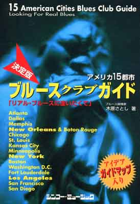
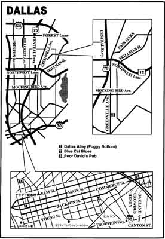
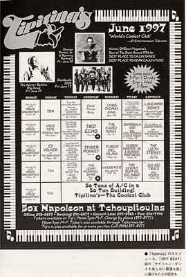
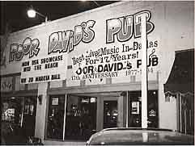
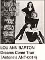

 |
目次 |
|
題目：アメリカ１５都市ブルースクラブガイド「リアルブルースに逢いたくて」 |
|
ダラス地図  生演奏スケジュール  |
第一章 DALLAS ダラス（テキサス州）
1920年代にはブラインド・レモン・ジェフアースンが歩いた通りに、
今は毎晩、大音量でロックが流れている。 |
|
 Poor David's Pubプアー・デイヴィズ・パブ 1924 Greenville Ave．Tel：214－821-9891 70年代の中頃から営業している古いパブです。看板のとおり、ネオンもショボッた店で、車で探してい て見落としそうになりました。車を降りるとがらんどうに響くようなロック系の音楽が聴こえてきて、ち ょっと期待させられたのですが、ごくごく平凡なロック・バンドでした。覗いて驚いたのは、音の割には、 客はたった3人だったことです。スケジュール表もなく、たいした店ではないなと思いました。しかし、ポ スターを見ると毎週末の金曜、土曜日にはなかなかの大物が来て演奏しているようでした。  ルー・アン・バートン Lou Ann Barton1954年生まれの女性白人ヴオーカリスト。テキサスのオーステインで70年代初頭から活躍し、1982年にレ コードを発表しています。彼女の声はアーマ・トーマスを思わせるようで、はっきりしていて力強く輝く ような印象があります。ステイーヴイー・レイ・ヴオーン、W.C．クラークらと演奏活動をしていました。 しばらくブランクがありましたが、1989年の『Read My Lips』（Antone's ANT=0009）はジミー・ヴオーン、 キム・ウイルスン（ファビュラス・サンダーバーズのハープ・プレーヤー）らの参加もあり、ローリングス トーン誌で高い評価を得ました。今ではオーステイン／テキサスのブルースの女王と言われています。 |